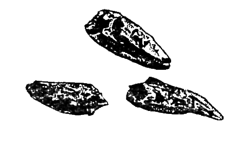

Перцы красные (капсикумы)
")
Плоды нескольких видов растений рода капсикумов семейства пасленовых, из которых наиболее распространены в качестве пряностей следующие.
Перец стручковый (Capsicum annuum L., Capsicum longum L)
Синонимы: красный, острый, жгучий перец, мексиканский, испанский, турецкий, мадьярский, паприка, чилли. В диком состоянии многолетнее, в культивированном — однолетнее травянистое растение, дающее плоды-стручки.
Родина — Центральная Америка. Культивируется во всех странах со сравнительно теплым климатом. В СССР — на юге Украины, в Молдавии, в Нижнем Поволжье, на Кубани, на Северном Кавказе, в Закавказье и Средней Азии.
Помимо указанных основных торговокулинарных названий имеет много местных и агросортовых наименований, связанных с тем, откуда данный сорт завозился и где селекционировался.
В процессе селекции в Европе выведено много видоизменений (сортов) стручкового перца, отличающихся внешним видом стручка (длинный, изогнутый, конический, грушевидный), его величиной и цветом (красный, черный, зеленый, желтый).
В качестве пряности употребляются лишь красные (острые) сорта стручкового перца, в недозревшем виде имеющие зеленый цвет.
В СССР выращивают такие сорта красного перца: астраханский, украинский горький (оба — очень острые), кутаисури, маргеланский, наманганский (умеренно острые), великан, слоновый хобот (смягченно острые).
В качестве пряности употребляются либо зрелые свежие, но чаще всего высушенные плоды (целые и молотые) удлиненно-конической формы, чуть изогнутые на конце, размером от 4 до 10 сантиметров, яркого красного цвета с гладкой, блестящей, словно лакированной поверхностью. Запах у стручкового перца слабый, вкус — острожгучий, что объясняется наличием во всех видах капсикумов значительного количества алкалоида капсаицина.
Стручки можно употреблять с семенами и без них, учитывая, что молотый перец, приготовленный из целого перца с семенами, более жгуч, чем приготовленный из одной лишь внешней оболочки, без внутренних перегородок и семян.
Стручковые перцы трудно пульверизировать (молоть, истирать в порошок), особенно при ручной, не машинной молке. Поэтому настоящий (без подмеси) рыночный красный перец выходит крупномолотым. Тонкомолотые красные перцы чаще содержат подмеси и обычно принадлежат к слабожгучим сортам красного перца (паприка).
В молотом виде красный перец имеет различные оттенки оранжевого или кирпичнокрасного цвета.
Кайенский перец (Capsicum fastigiatum Bl. и Capsicum frutescens)
Синонимы: индийский перец, бразильский перец.
Небольшой многолетний кустарник с короткими пушистыми ветвями.
Родина — Южная Индия, Ява. Разводится также в Южной Америке (Гвиана, Бразилия) и в некоторых других тропических странах.
Отличается от стручкового перца, прежде всего внешним видом плодов — они маленькие (1,5X0,5 сантиметра), светло-оранжевого цвета. В молотом виде кайенский перец бледно-оранжевый, почти желтый или серо-желтый — значительно светлее красного стручкового перца.
Кайенский перец более жгучий, чем обычный красный (он может вызывать даже сильные ожоги кожи), поэтому употребляется в крайне малых дозах (например, 1 стручок на ведро при засоле овощей). Но главное отличие кайенского перца состоит в том, что в молотом виде он обладает специфическим пряно-горьким ароматом, в то время как аромат других капсикумов крайне слаб.
Иногда «кайенским» у нас неправильно называют кустовидный агросорт стручкового перца вида Capsicum Longum L., плоды которого (размером 10X2 сантиметра) имеют морщинисто-бугорчатую, как бы смятую, а не гладкую поверхность и тем самым отличаются по внешнему виду от других агросортов красного перца, разводимого в СССР. В силу своей относительно сильной жгучести этот сорт в торговле и в быту называется «кайенским», хотя с настоящим кайенским не имеет ничего общего и относится к другому ботаническому виду.

Наоборот, другой вид настоящего кайенского перца (Capsicum frutescens) в Западной Европе, в странах Америки, Азии и Африки весьма часто называют в торговле и кулинарии не кайенским, а чилли. Вообще же «чилли» называют также все наиболее жгучие сорта красных перцев, чтобы отличать их от средне и слабожгучих.
Птичий перец (Capsicum minimum Roxb.)
Синонимы: мелкий перец, столовый перец. Мелкие светло-красные стручки, длиной 2—2,5 сантиметра, умеренной жгучести, употребляемые в качестве пряности чаще всего в уже готовые блюда (отсюда название «столовый перец»).
Однако специфика птичьего перца состоит в том, что он широко применяется во всем мире для подкормки домашней птицы благодаря наличию в нем веществ, стимулирующих яйценоскость и улучшающих окраску пера.
* * *Довольно распространен неправильный способ применения красных перцев в кулинарии. Многие употребляют их как приправу, а не как пряность, то есть добавляют к уже готовому кушанью, которое «перчат», вместо того, чтобы вводить во время приготовления блюда, по крайней мере за несколько минут до его окончательной готовности (обычно от 5 до 10 минут).
Красные перцы употребляются преимущественно в мясные, овощные и рисовые блюда, начиная от салатов, супов и борщей и кончая тушеным мясом, овощами и их сочетаниями с рисом. Особенно полезно и приятно добавлять красный перец в молотом виде в различные овощные пюре (картофель, помидоры, брюква, репа, морковь, горох, баклажаны, кабачки); при этом перец надо сочетать с чесноком, кориандром, базиликом, чабером, лавровым порошком — это разнообразит стол и придает различные вкусовые «звучания» хорошо известным и однообразным блюдам (например, картофельному пюре).
В гораздо меньшем количестве, чем в овощные блюда, красный перец можно добавлять в рыбные супы и блюда из отварной рыбы, причем в последнем случае не непосредственно, а в составе соответствующего соуса, в котором другими компонентами могут выступать мускатный орех, тимьян, лук, укроп, фенхель, петрушка. Вообще в соусах красный перец употребляется в виде острого начала, причем наряду с теми пряностями, у которых более развит аромат, а не жгучесть. Красный перец придает соусам не только жгучесть, но и красивый цвет, особенно паприка; пигментное начало паприки выражено сильнее, так как на ее приготовление идет исключительно оболочка красного перца, без семян и внутренних перегородок стручка.
Красный перец входит также во все виды сильно жгучих карри и в большинство других пряных смесей. Менее распространено его употребление при приготовлении жареной домашней птицы, хотя он придает ей пикантность, отбивает специфический куриный запах (в таких случаях он употребляется в сочетании с бадьяном и чесноком за 15 минут до готовности блюда).
Еще реже употребляют красный перец с яичными и особенно молочными продуктами (творог, кефир, простокваша, сметана). А вот в восточной кухне такие сочетания не являются редкостью. Взять, к примеру, чивздзосу и курт — они не только чрезвычайно приятны по вкусу, но и весьма полезны по своим диетическим и питательным свойствам, поскольку в красных перцах содержится самый высокий для овощных культур процент витаминов С и А.
Для приготовления осетинской чивздзосы следует развести чайную ложку аджики или 0,5 чайной ложки красного молотого перца в полстакане сметаны и оставить на 20—30 минут, после чего, хорошенько размешав, влить в литр кефира или простокваши вместе с мелко нарезанными 3—4 дольками чеснока и, вновь перемешав, оставить на 2—3 часа при комнатной температуре, а затем убрать на сутки в более прохладное место. На другой день молочный «настой» красного перца готов: его можно есть с хлебом, употреблять как подливку к овощным и мясным блюдам, как заправку к салатам, отварному картофелю и т. д. Так же несложно приготовить узбекский курт — сушеный творог с красным перцем. На 1 литр кислого молока кладут 1 столовую ложку соли и отцеживают в мешочке в течение 24—30 часов. Когда вода отцедится, к творогу (сузьме) добавляют еще 1 столовую ложку соли (на 1 килограмм сузьмы) и 1 чайную ложку молотого красного перца, все тщательно перетирают в пасту, из которой делают шарики величиной с грецкий орех и раскладывают их на доске, покрыв марлей, на солнце, чтобы они сохли 2—3 дня. После этого курт можно хранить в полотняных мешочках до двух недель. Употребляют его как закуску и как десерт, а также для приготовления к у р т а в ы.